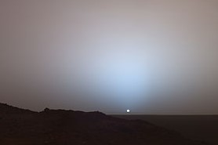

The time of sunset varies throughout the year, and is determined by the viewer's position on Earth, specified
by longitude and latitude, and elevation. Small daily changes and noticeable semi-annual changes in the timing
of sunsets are driven by the axial tilt of Earth, daily rotation of the Earth, the planet's movement in its annual elliptical
orbit around the Sun, and the Earth and Moon's paired revolutions around each other. During Winter and Spring,
the days get longer and sunsets occur later every day until the day of the latest sunset, which occurs after the summer
solstice. In the Northern Hemisphere, the latest sunset occurs late in June or in early July, but not on the Summer solstice
of June 21. This date depends on the viewer's latitude (connected with the Earth's slower movement around the aphelion around
July 4). Likewise, the earliest sunset does not occur on the winter solstice, but rather about two weeks earlier, again depending
on the viewer's latitude. In the Northern Hemisphere, it occurs in early December or late November (influenced by the Earth's faster
movement near its perihelion, which occurs around January 3).
Sunset is distinct from twilight, which is divided into three stages, the first being civil twilight,
which begins once the Sun has disappeared below the horizon, and continues until it descends to 6 degrees
below the horizon; the second phase is nautical twilight, between 6 and 12 degrees below the horizon; and
the third is astronomical twilight, which is the period when the Sun is between 12 and 18 degrees below
the horizon.[1] Dusk is at the very end of astronomical twilight, and is the darkest moment of twilight just
before night.[2] Night occurs when the Sun reaches 18 degrees below the horizon and no longer illuminates the sky.
Locations further North than the Arctic Circle and further South than the Antarctic Circle experience
no full sunset or sunrise on at least one day of the year, when the polar day or the polar night persists
continuously for 24 hours.

Sunset on Mars Sunsets on other planets appear different because of differences in the distance of the planet from
the Sun and non-existent or differing atmospheric compositions.Mars[edit] On Mars, the setting Sun appears about
two-thirds the size it appears on Earth[14] because of its greater distance from the Sun. The colors are typically
hues of blue, but some Martian sunsets last significantly longer and appear far redder than is typical on Earth.[15]
The colors of the Martian sunset differ from those on Earth. Mars has a thin atmosphere, lacking oxygen and nitrogen,
so the light scattering is not dominated by a Rayleigh Scattering process. Instead, the air is full of red dust,
blown into the atmosphere by high winds,[15] so its sky color is mainly determined by a Mie Scattering process,
resulting in more blue hues than an Earth sunset. One study also reported that Martian dust high in the atmosphere
can reflect sunlight up to two hours after the Sun has set, casting a diffuse glow across the surface of Mars.[15]